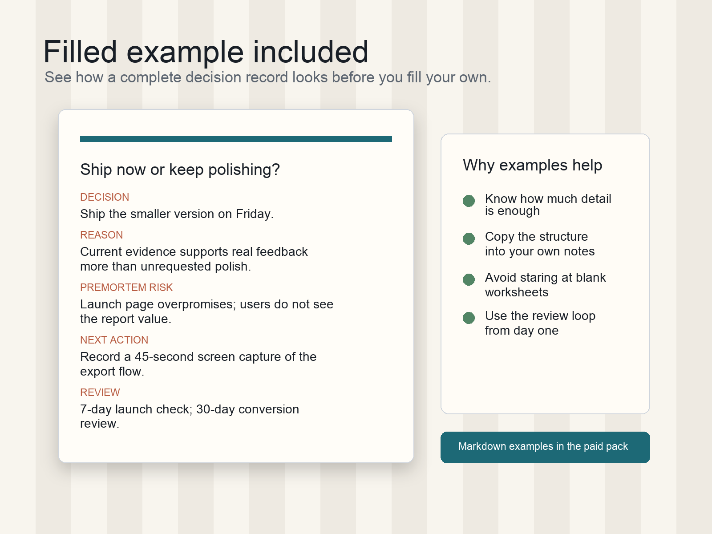

Blank templates can look useful and still leave you wondering how much detail is enough. The full kit includes filled examples so you can see the level of specificity that makes a decision record useful later.
Before: the vague loop
I should probably choose a direction, but both options have tradeoffs.
If I pick the wrong one I will waste time. I keep reopening the question
instead of testing one path.
After: the record
- Decision: choose one path for the next two weeks.
- Known facts: current capacity is limited; both options need real effort; waiting has its own cost.
- Important unknown: which path produces clearer evidence from actual users.
- Main risk: continuing to compare options without shipping a test.
- Prevention action: define a two-week scope and stop adding new criteria.
- Next action: publish the smallest useful version and schedule review.
- Review date: seven days after launch, then again after thirty days.
What the filled example teaches
The record is intentionally plain. It does not try to predict the future. It preserves what was known, what was assumed, what risk was accepted, and what action came next. That is enough to improve the review later.

Use the same structure
Try the free reset worksheet when you only need one page. Buy the full kit when you want the workbook, Markdown templates, filled examples, and local tracker in one reusable package.